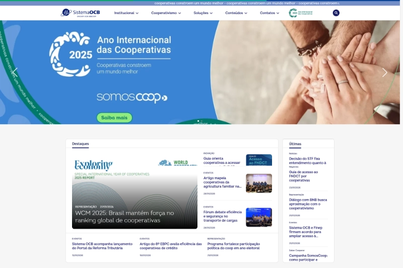

SomosCooperativismo — Portal do cooperativismo nacional
Implementação, migração e evolução do portal institucional do cooperativismo nacional.
- Contexto: Portal público · Produção
- Entregas: instalação Joomla, migração de conteúdo, atualização J4→J5 e modernização
- Tecnologias: Joomla 4/5, PHP, jQuery, Bootstrap, Helix, SP Page Builder, Component Creator
- Status: Ativo em produção